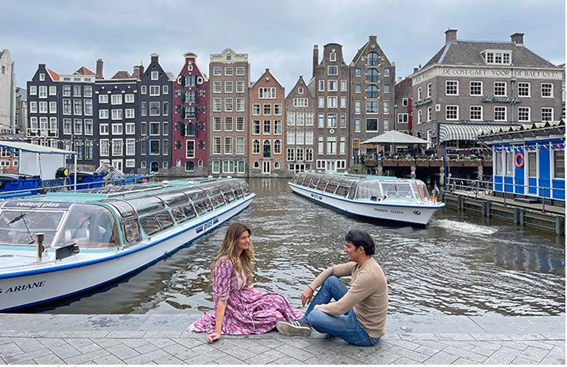
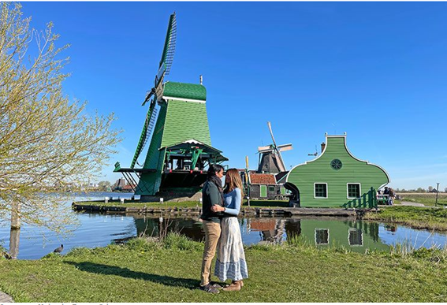
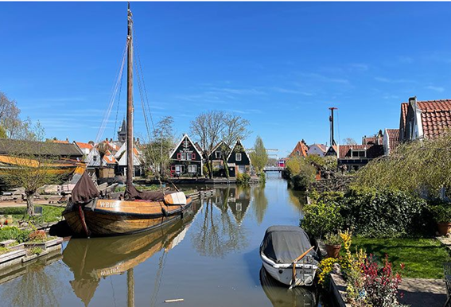
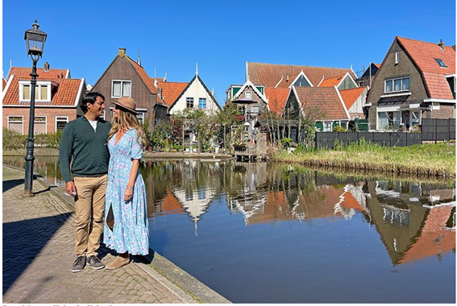
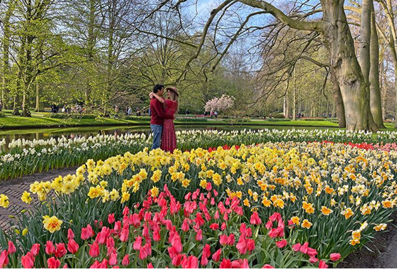
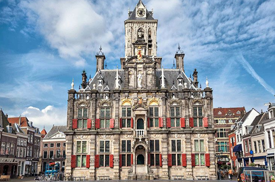
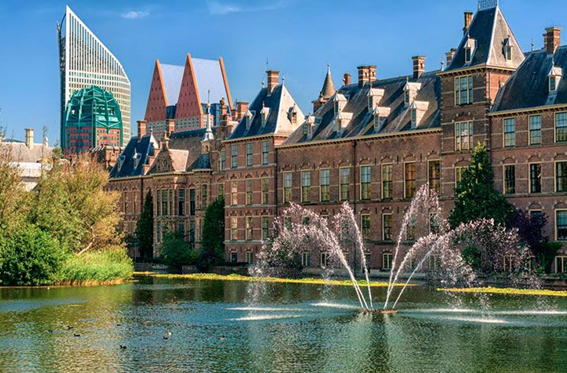

Amsterdam, una ciudad imprescindible que ver en Países bajos
La capital de los Países Bajos no necesita presentación, sin duda, es la ciudad más bonita que ver en Holanda. Pasear por sus preciosos canales, visitar sus interesantes museos, entrar a un coffee shop, caminar de noche por el peculiar Barrio Rojo, ver la casa de Anna Frank, visitar una casa flotante, ir de compras por las tiendas vintage de Jordaan, comprar flores en el Bloemenmarkt, dar un paseo en barco por los canales o relajarse en Vondelpark son algunas de las cosas que hacer en Amsterdam que no pueden faltar en vuestro viaje.
Zaanse Schans, un tradicional pueblo que ver en países bajos
A solo 20 kilómetros de Amsterdam se encuentra Zaanse Schans, el famoso pueblo de los molinos que ver en Holanda, donde se ha recreado el modo de vida tradicional de una antigua aldea holandesa. En este museo al aire libre encontraréis precioso s paisajes, queserías y chocolaterías tradicionales, talleres de zuecos, exposiciones de relojes antiguos, talleres de elaboración de barriles tradicionales.. Zaanse Schans es una de las mejores excursiones desde Amterdam donde podréis pasar una mañana o una tarde visitando algunos de sus molinos aceiteros, aserraderos o de especias que hoy en día siguen funcionando.
Edam, uno de los pueblos más bonitos que ver en Holanda
En la región de Waterland, a unos 20 kilómetros de Amsterdam, se encuentran algunos de los pueblos más bonitos que ver en Holanda: Edam, Volendam y Marken. Cada uno de ellos tiene su peculiaridad , así que al estar muy cerca unos de otros podéis visitarlos el mismo día. Edam es nuestro pueblo favorito de la ruta, tal vez sea por sus pintorescos canales y puentes.
Volendam, un pueblo costero que ver en Holanda
Otro de los lugares que ver en Holanda es Volendam. Este pequeño pueblo tiene un pintoresco puerto donde podréis ver anclados unos cuantos barcos antiguos de madera. Encontraréis también un montón de restaurantes donde probar alguno de sus platos típicos como la anguila ahumada o arenque en salazón.
Keukenhof, el jardín más grande de tulipanes que ver en países bajos
A unos 40 kilómetros de Amsterdam se encuentra Keukenhof, los jardines de tulipanes más famosos que ver en Holanda en los que podréis ver hasta 7 millones de tulipanes y algunas otras flores como jacintos y narcisos. Estos jardines son una explosión de color y una delicia para el olfato, pues el aroma que desprenden millones de flores juntas es algo inolvidable.
La Haya, una ciudad importante que ver en países bajos
La Haya es una de las ciudades más importantes que ver en Holanda, pues aquí se encuentra la sede del gobierno y la residencia de los reyes. La ciudad tiene numerosos puntos de interés que visitar como la Corte Internacional de Justicia de las Naciones Unidas, la Real Pinacoteca Mauritshui, el parlamento, Museo Municipal de La Haya, la Iglesia Nueva…
Delft, una encantadora ciudad que ver en los Países Bajos
Ubicada a 50 kilómetros de Amsterdam, Delft es una de las ciudades con más encanto para visitar en Holanda conocida por su famosa cerámica azul. Tiene un precioso casco antiguo, rodeado de canales, que es una auténtica joya alejada aún del turismo de masas. En un paseo de un par de horas podréis visitar la plaza del Mercado, el Ayuntamiento, la Iglesia Nueva, la Iglesia Vieja, el molino de viento, el centro Vermeer o el monasterio Prinsenhof.
